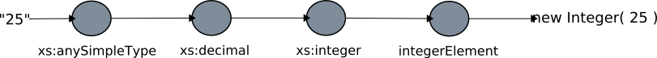

Bindings¶
A binding is what transforms xml into a java object and vice versa. Bindings can be attached to the following types of xml “components”:
- elements
- attributes
- simple types
- complex types
More specifically, a binding is an instanceof of org.geotools.xml.Binding:
interface Binding {
/**
* @return The qualified name of the target for the binding.
*/
QName getTarget();
/**
* @return The java type this binding maps to.
*/
Class getType();
/**
* @return The execution mode of the binding, one of the constants AFTER,
* BEFORE, or OVERRIDE.
*
*/
int getExecutionMode();
}
Binding Target¶
Bindings must declare the component they are attached to, known as the target for the binding.:
QName getTarget();
This is achieved with a qualified name, an instance of javax.xml.namespace.QName. A qualified name is made up of:
- a namespace uri, and
- a local parse
Examples:
| Namespace | Local | Component |
|---|---|---|
| http://www.geotools.org/po | purchaseOrder | Global “purchaseOrder” element |
| http://www.w3.org/2001/XMLSchema | int | Simple type “int” |
| http://www.opengis.net/gml | AbstractFeatureType | Complex type “AbstractFeatureType” |
Binding Type¶
The job of a binding is to transform between objects and xml. Along with the target xml component, a binding declares the type of the resulting java object.:
Class getType();
Examples:
| Target | Type (Java Class) |
|---|---|
| http://www.geotools.org/po, purchaseOrder | org.geotools.po.PurchaseOrder |
| http://www.w3.org/2001/XMLSchema, int | java.lang.Integer |
| http://www.opengis.net/gml, AbstractFeatureType | org.geotools.feature.Feature |
Binding Execution¶
When an element or attribute in an xml document is being parsed, a Binding Execution Chain is created for it under your control:
int getExecutionMode();
The bindings in the chain are executed one after another and the result is the final representation of the element / attribute as a java object. Each binding receives the value produced by the binding before it.
Consider the following xml snippet, in which an element named “integerElement” which is of type “xs:integer” is being parsed:
<integerElement>25</integerElement>
By default, a binding execution chain is made up of the following bindings:
- A binding for the element or attribute itself ( optional )
- A binding for the type of the element / attribute
- Bindings for each super type in the type hierarchy of the element / attribute
So for the above example, the following bindings would form the binding execution chain:
Once the binding chain has been formed, it is executed in order, with the input to the chain being the “raw” text of the element. At each binding a tranformation occurs and is passed onto the next binding in the chain. The end result of which is the final transformed value for the element.
The default execution behaviour is to execute after its “parent” binding has executed. However a binding may also specify different execution behaviour, called its Execution Mode:
After
Binding executes after its parent. The input to the binding is the output of its parent. This is the default execution mode for Simple Bindings
Before
Binding executes before its parent. The output of the binding is then the input to its parent.
Override
Binding completely overrides its immediate parent and all grandparents. The input to the binding is the “raw” value of the element or attribute.
The execution mode which should be used really depends on both the xml type hierarchy involved, and the java object model it maps too. Continuing with the above example, in the end the desired result is to turn the string “25”, into the integer 25. Using four bindings as suggested above seems to be overkill.
A more logical approach would be to have the “integer” binding perform the transformation directly. This can be achieved by having the integer binding declare its execution mode to be “OVERRIDE”:
Encoding
Similar to parsing, encoding is executed via a binding chain. The input to the chain is the object itself and the output is xml. The formation of the chain for encoding is identical to that of parsing. So for the previous example the binding chain that would result is:
Simple Bindings¶
Types in xml schema fall into two categories: Simple and Complex. For this reason bindings also fall into the same two categories.
Simple bindings are used to parse and encode elements and attributes which have simple types. The api for simple bindings looks like:
/**
* Parses an instance component (element or attribute) into an object
* representation.
*/
Object parse(InstanceComponent instance, Object value) throws Exception;
/**
* Performs the encoding of the object as a String.
*
*
*/
String encode(Object object, String value) throws Exception;
Parsing:
Object parse(InstanceComponent instance, Object value) throws Exception;
The parse method for simple bindings takes two parameters:
- instance: The instance component ( element or attribute ) that is being parsed as an instance of org.geotools.xml.InstanceComponent
- value: The parsed value of the element / attribute created by the previous binding in the execution chain ( explained in greater detail above ). If the binding is the first in the chain, this value is the raw text of the element / attribute as a String.
The return value of the method is the transformed object. Continuing with the “xs:integer” example, an implementation could be:
Object parse(InstanceComponent instance, Object value) throws Exception { return Integer.parseInt( (String) value ); }Encoding:
String encode(Object object, String value) throws Exception;
The encode method for simple bindings must serialize the element or attribute as a string.
It takes two parameters:
- object: The object to serialize or encode as xml
- value: The string value as encoded by the previous binding in the execution chain. If the binding is the first in the chain, the value is the result of calling toString() on the object parameter.
The return value of the method is the serialized value for the object. The example of “xs:integer” can be implemented as:
String encode(Object object, String value) throws Exception { Integer integer = (Integer) object; return integer.toString(); }AbstractSimpleBinding
The class org.geotools.xml.AbstractSimpleBinding is available for subclassing by binding writers.
Complex Bindings¶
Complex bindings are used to parse and encode elements which have complex types.
The interface for complex bindings looks like:
/**
* Parses a complex element from an instance document into an object
* representation.
*
*/
Object parse(ElementInstance instance, Node node, Object value) throws Exception;
/**
* Performs the encoding of the object into its xml representation.
*
*/
Element encode(Object object, Document document, Element value) throws Exception;
/**
* Returns a property of a particular object which corresponds to the
* specified name.
*
*/
Object getProperty(Object object, QName name) throws Exception;
Parsing:
Object parse(ElementInstance instance, Node node, Object value) throws Exception;
The parse method for a complex binding takes three parameters:
- instance: The element instance being parsed, an instance of org.geotools.xml.ElementInstance
- nocde:: A node in the current “parse tree” ( explained below ) at the time the binding is being executed, an instance of Node
- value: The parsed value as produced by the previous binding in the execution chain. This value is null for the first binding in the chain.
Complex types by defintion are xml elements which are composed of other xml elements and attributes. A complex object could be defined as an object which is composed of other objects. Parsing a complex object really just amounts to rounding up objects for child elements, and composing the resulting object accordingly.
Parsing of complex elements occurs on the trailing edge. At which point all child elements and attributes have been parsed and placed in the “parse tree”. The parse tree is an instance of Node. The Node interface contains methods for obtaining parsed values of child elements and attributes.
A complex binding must use the parse tree to obtain the values that it needs to compose the resulting object.
As an example, consider the binding for the “PurchaseOrderType” from the purchase order schema.:
Object parse(ElementInstance instance, Node node, Object value) throws Exception { PurchaseOrder po = new PurchaseOrder(); //mandatory child elements po.setShipTo( (USAddress) node.getChildValue( "shipTo" ) ); po.setBillto( (USAddress) node.getChildValue( "billTo" ) ); po.setItems( (Items) node.getChildValue( "Items" ) ); //optinal child elements if ( node.hasChild( "comment" ) ) { po.setComment( (String) node.getChildValue( "comment" ) ); } //attributes po.setOrderDate( (Date) node.getAttributeValue( "orderDate" ) ); return po; }Encoding:
Element encode(Object object, Document document, Element value) throws Exception;
The encode method for a complex binding must transform the object into a DOM element. It takes three parameters:
- object: The object to encode
- document: A document used to create DOM components
- value: A value as an element which is the result of the previous binding in the execution chain. For the first binding in the chain this is an empty element ( no attributes, children, or text )
The return value of the method is the encoded element. Often this is the same element passed in ( the value parameter ), with some content added to it.
The getProperty method for a complex binding is used to retreive properties from an object being encoded.:
Object getProperty(Object object, QName name) throws Exception;
The returned objects themselves are then encoded down the line. For an object being encoded as an element, each property corresponds to a child element or attribite.
The method takes two parameters:
- object: The object being encoded, this is the same object as in the encode method
- name: The qualified name of the property to retrieve
The return value of the method is the property itself, or null if it does not exist.
Note
A multi-valued property is an element declaration in which the “maxOccurs” attribute is greater then 1. In this case, the getProperty method may return a collction, an array, or an iterator for the property.
The entire encoding process for a complex binding is split over these two methods.
Consider the “PurchaseOrderType” example:
Element encode(Object object, Document document, Element value) throws Exception { return value; } Object getProperty(Object object, QName name) throws Exception { PurchaseOrder purchaseOrder = (PurchaseOrder) object; if ( "shipTo".equals( name.getLocalPart() ) ) { return purchaseOrder.getShipTo(); } if ( "billTo".equals( name.getLocalPart() ) ) { return purchaseOrder.getBillTo(); } ... }In the above example all of the work is dont in the getProperty method. This is often the case. However there are situations where the encode method is necessary.
- For types with “open-ended” or “extensible” content ( think AbstractFeatureType from the gml schema ). Since the content is open ended the schema does not contain the necessary information to retrieve the property
- For types with “mixed” content ( ie, can have child elements and text ). In this situation the child elements can be encoded with getProperty, and the text content can be be encoded in encode.
Note
While it is often not necessary to implement the encode method for a complex binding, the binding writer has the freedom to do so.
The above example would function exactly the same written as the following:
Element encode(Object object, Document document, Element value) throws Exception {
PurchaseOrder purchaseOrder = (PurchaseOrder) object;
USAddress shipTo = purchaseOrder.getShipTo();
Element shipToElement = document.createElement( "shipTo" );
value.appendChild( shipToElement );
Element name = document.createElement( "name" );
name.appendChild( document.createTextNode( shipTo.getName() ) );
shipToElement.appendChild( name );
Element street = document.createElement( "street" );
street.appendChild( document.createTextNode( shipTo.getStreet() ) );
shipToElement.appendChild( street );
...
Element billToElement = document.createElement( "billTo" );
value.appendChild( billToElement );
...
return value;
}
Object getProperty(Object object, QName name) throws Exception {
return null;
}
In this example, all the work is done in the encode method. However it is evident that the second example results in much more work for the binding implementor which is why teh first method is often preferred.
AbstractComplexBinding
The class org.geotools.xml.AbstractCompledxBinding is available for subclassing by binding writers.
Binding Context¶
Often bindings have dependencies on other types of objects. The most common case is a factory used to create objects. Bindings work with the concept of Constructor Injection, in which any dependencies a binding has on another object is listed as a parameter in its constructor.
Let us consider the “PurchaseOrderType” example once again:
class PurchaseOrderTypeBinding extends AbstractComplexBinding {
PurchaseOrderFactory factory;
public PurchaseOrderTypeBinding( PurchaseOrderFactory factory ) }
this.factory = factory;
}
...
}
In the above, the binding declares a dependency on a factory which it will use to construct objects. You may be asking the question Where does this factory come from?. The answer is the Binding Context.
The Binding Context is used to create bindings. More specifically a binding is created within a binding context. Which means that all dependencies ( a PurchaseOrderFactory in this case ) must also be present in the binding context. For those of you familiar with the concept of Inversion of Control (IoC) it may not surprise you that the binding context is nothing more then a PicoContainer instance.
The Binding Context is described further in the Configuration section.
Binding Testing¶
The org.geotools.xml.test.XMLTestSupport class is used as a base class for binding unit tests.
Subclasses of XMLTestSupport need to provide the configuration the binding under test is part of. For instance:
public class POBindingTest extends XMLTestSupport {
protected Configuration createConfiguration() {
return new POConfiguration();
}
}
The class provides convenience methods for testing various aspects of all bindings such as:
Parse Testing
Each binding unit test has a member of type org.w3c.dom.Document. It is meant to be used to build up an instance document to be parsed by the parser. The instance document contains the content that the binding under test will parse. The document must be built up from a test method. Once built up, the parse method is called to parse the instance document into an object.:
/** * Parses the built document. * <p> * This method should be called after building the entire document. * * </p> * @throws Exception */ protected Object parse() throws Exception;
The method takes no parameters. An example usage:
public class POBindingTest extends XMLTestSupport { ... public void testPurchaseOrderTypeParse() throws Exception { //build up the document Element purchaseOrderElement = document.createElementNS( "http://www.geotools.org/po", "PurchaseOrder" ); document.appendChild( purchaseOrderElement ); purchaseOrder.setAttribute( "orderDate", "2007-01-19" ); Element shipToElement = document.createElementNS( "http://www.geotools.org/po", "ShipTo" ); purchaseOrderElement.appendChild( shipToElement ); shipToElement.setAttribute( "country", "Canada") ); ... //call parse PurchaseOrder purchaseOrder = (PurchaseOrder) parse(); //make assertions assertEquals( new Date("2007-01-19"), purchaseOrder.getOrderDate() ); ... } }Encode Testing
The encode method is used to encode an object into an instance document. It must be called after the object tree in which the binding will encode has been built up.:
/** * Encodes an object, element name pair. * * @param object The object to encode. * @param element The name of the element to encode. * * @return The object encoded. * @throws Exception */ protected Document encode( Object object, QName element ) throws Exception;
The method takes two parameters:
- object: the object to be encoded
- element: the qualified name of the element which maps to the object
The method returns a org.w3c.dom.Document object which is the root of the encoded document.
An example usage:
public class POBindingTest extends XMLTestSupport { ... public void testPurchaseOrderTypeEncode() throws Exception { //build up the object PurchaseOrder purchaseOrder = new PurchaseOrder(); purchaseOrder.setOrderDate( new Date("2007-01-19") ); USAddress shipTo = new USAddress(); shipTo.setCountry( "Canada" ); .. purchaseOrder.setShipTo( shipTo); //encode the object Document document = encode( purchaseOrder, new QName( "http://www.geotools.org/po", "PurchaseOrder" ) ); //make assertions assertEquals( "2007-01-19", document.getDocuemntElement().getAttribute( "orderDate" ) ); ... } }Type Mapping Testing
Part of testing a binding is being sure of which type of object it returns. To acheive this the binding method can be used to obtain an instance of a particular binding.:
/** * Convenience method for obtaining an instance of a binding. * * @param name The qualified name of the element,attribute,or type the * binding "binds" to, the key of the binding in the container. * * @return The binding. */ protected Binding binding( QName name );
The method takes a single parameter which is the qualified name of an element, attribute, or type. It returns the binding which is bound to the name. With the binding instance available, its mapped type can be asserted.
An example usage:
public class POBindingTest extends XMLTestSupport { ... public void testPurchaseOrderTypeType() { //get an instance of the binding Binding binding = binding( new QName( "http://www.geotools.org/po", "PurchaseOrderType" ) ); //assert the type assertEquals( PurchaseOrder.class, binding.getType() ): }Execution Testing
In much the same way that the binding method shown above is used to assert type mapping, it can be used to assert execution mode as well.:
public class POBindingTest extends XMLTestSupport { ... public void testPurchaseOrderTypeExecutionMode() { //get an instance of the binding Binding binding = binding( new QName( "http://www.geotools.org/po", "PurchaseOrderType" ) ); //assert the type assertEquals( Binding.OVERRIDE, binding.getExecutionMode() ): }